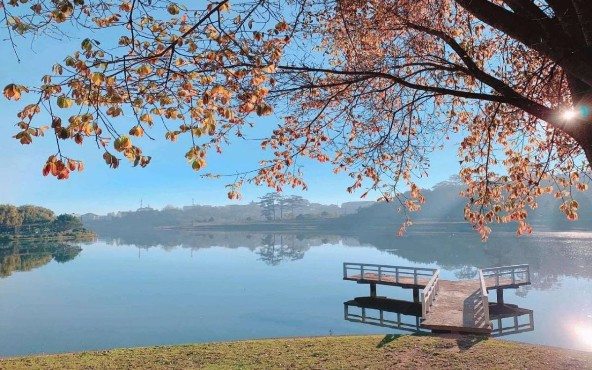

Thông Tin Tour
Giá: 3,500,000 VND
Ngày đi: 10/12/2024
Phương tiện: Xe khách giường nằm hoặc xe limousine
Thời gian: 3 ngày 2 đêm
Giới thiệu: Tour khám phá thiên nhiên, ẩm thực và nét đẹp văn hóa Đà Lạt.
Lịch Trình Tour
- Ngày 1: Khởi hành từ TP.HCM - Đà Lạt. Buổi chiều tham quan Hồ Xuân Hương và Dinh Bảo Đại.
- Ngày 2: Khám phá Thác Datanla, Làng Hoa Vạn Thành và Chùa Linh Phước. Buổi tối tự do tại chợ đêm Đà Lạt.
- Ngày 3: Tham quan Vườn Hoa Thành Phố, đồi chè Cầu Đất. Khởi hành về lại TP.HCM.
Điểm Tham Quan Nổi Bật
-  Hồ Xuân Hương: Địa điểm lý tưởng để dạo bộ và tận hưởng cảnh đẹp.
- Thác Datanla: Thác nước nổi tiếng với vẻ đẹp hoang sơ.
- Vườn Hoa Thành Phố: Bộ sưu tập các loài hoa đặc sắc của Đà Lạt.
- Chợ Đêm Đà Lạt: Nơi thưởng thức ẩm thực và mua sắm quà lưu niệm.
Ẩm Thực Đặc Sắc
Tour sẽ giới thiệu đến du khách các món ăn nổi tiếng của Đà Lạt:
- Bánh căn: Một món ăn đặc trưng với hương vị đậm đà.
-
 Bánh ướt lòng gà: Món ăn độc đáo kết hợp giữa bánh ướt mềm và lòng gà.
Bánh ướt lòng gà: Món ăn độc đáo kết hợp giữa bánh ướt mềm và lòng gà.
- Lẩu gà lá é: Hương vị thơm ngon, phù hợp với không khí mát mẻ của Đà Lạt.
Phương Tiện Di Chuyển
Du khách có thể lựa chọn:
- Xe khách giường nằm tiện nghi.
- Xe limousine sang trọng, thoải mái.